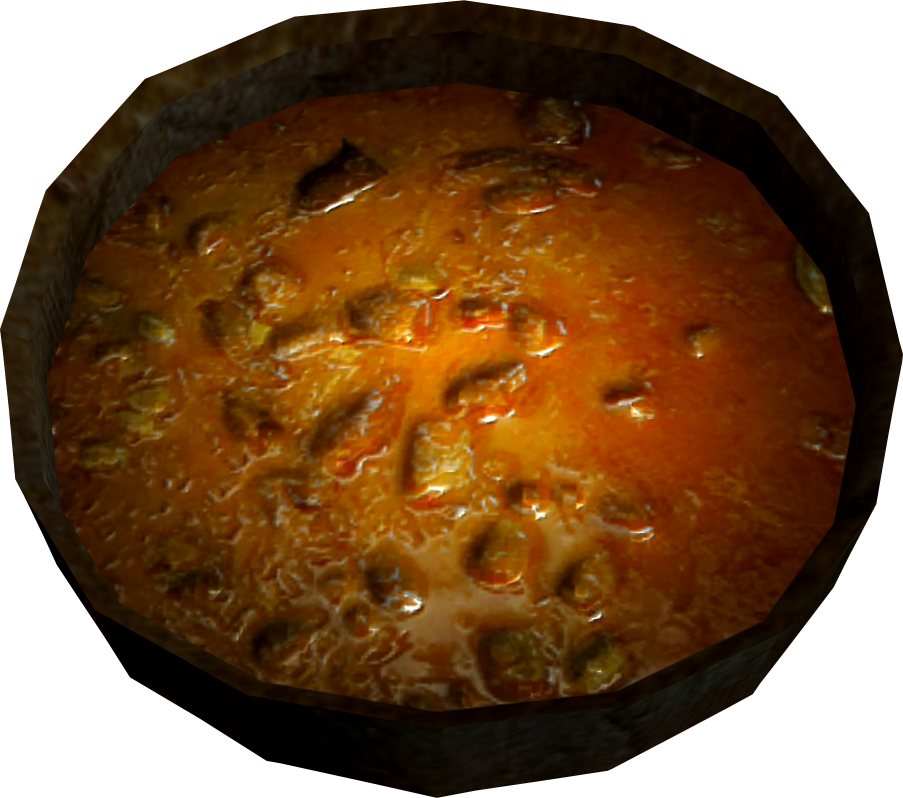

Elsweyr Fondue

Cheese is the solution to all problems, fondue is made of cheese, then fondue is the solution to all problems
Ingredients
- Founde pot and skewers
- 1 bottle of ale, flat
- 100g of grated gruyere cheese
- 100g of grated emmental cheese
- 100g of diced soft blue cheese
- Brown sugar to taste
- Fresh bread, cut into cubes
Steps
- setup the fondue pot
- Add the ale and sugar and stir
- Add the grated cheese bit by bit
- Add the blue chesse pieces and stir until smooth